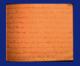
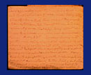

  |
The papers, throughout the North, hailed the event as a glorious victory for the Federal arms and illustrating the prowess of the Yankee mercenaries, but never mentioning the 23,000 men in their army which a Federal Captain boasted they had as soon as we were captured, and which all were very anxious to bring down to six or eight thousand when they found out the smallness of our force. Correspondent of the press doubled and even trebled our force, boldly asserting the Shields had defeated Jackson's, Smith's and Longstreet's united forces. This unmitigated lie has been circulated far and wide, throughout the North, and will doubtless be believed by the mass of the Northern people. Marvelous stories were told of Banks' pursuit, and Jackson's disastrous retreat. Banks was shelling them all the way, with immense slaughter, and capturing 700 army wagons (2 or 3 times the number Jackson had) and Jackson was throwing the wounded and dead from the ambulances and wagons, literally strewing the whole way with them, to facilitate his retreat. The special correspondent of the "Herald" said that Jackson's forces was 16 regiments of infantry, numbering 11,000 men and three battalions of horse, under Ashby and Stuart; when in truth there were but 9 regiments and 1 battalion, less than 5,000 men and one regiment of horse (Ashby's). Every effort was made to increase our force and diminish theirs. |
||

 Return to the Booker Collection
Return to the Booker Collection
{kind=link}
{kind=link}
{kind=link}